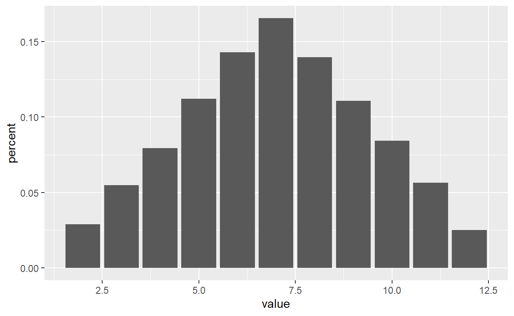

מבוא
ביחידה זו נלמד על מספר טכניקות חשובות לקידוד מסודר ואפקטיבי. במהלך היחידה נלמד על לולאות ופונקציות וכיצד להשתמש בהן כדי לכתוב קוד יעיל ותמציתי, נעבור על מספר המלצות לניהול קבצי קוד מורכבים ונגע במספר פרקטיקות המסייעות בניהול של ניתוחים ארוכים ותוצאותיהן.
שמירה על קוד תמציתי חשובה משתי סיבות: ראשית, כתיבה תמציתית היא יעילה ומהירה יותר ומאפשרת תיקונים ושינויים בנוחות. שנית, היא מסייעת לנו להבין את הקוד בצורה טובה יותר כשנחזור אליו בעתיד ולזהות טעויות באופן יותר יעיל.
ייתכן שלחלקכם נושאים אלו נשמעים כשוליים בחשיבותם לקידוד עצמו, אבל כבר בפרויקט הקידוד הראשון שלכם אתם צפויים לגלות שהם חיוניים עבור כל ניתוח שתבצעו לא פחות מאשר הקוד עצמו.
הנושאים שנלמד ביחידה זו כוללים:
לולאות קוד
פונקציות
הערות, חלוקה לפרקים וקיפולי קוד
שמירה וייצוא תוצאות
יצירת מסמכים בRmarkdown
לולאות
עקרון מנחה חשוב בכתיבת קוד יעיל הוא הימנעות מחזרה על קוד מספר פעמים.
אם, למשל, אנחנו מעוניינים לעשות את אותה הבדיקה על ארבעה שאלונים שונים - אנחנו נרצה להימנע מלכתוב את הקוד שמבצע את הבדיקה ארבע פעמים, כאשר ההבדל היחיד בין החזרות הוא שם השאלון.
במקום זאת נוכל להשתמש בלולאה.
הגדרת לולאה
לולאת קוד מוגדרת בצורה הבאה:
for (object in vector){
# Do stuff with each object
}למשל:
for (i in c("a","b","c")){
# Do stuff with each object
print(i)
}## [1] "a"
## [1] "b"
## [1] "c"הלולאה מורכבת משני חלקים:
1. הגדרת הלולאה: שורת הפתיחה של הלולאה
(for (i in c("a","b","c"))) מגדירה על אילו אובייקטים אנחנו
רוצים שהלולאה תרוץ. במקרה שלנו מדובר באיברים של הוקטור
c("a","b","c"). הלולאה תרוץ על כל אחד מהאיברים, לפי הסדר,
ותייצג כל אחד מהם בתורו באמצעות i.
2. הגדרת הלולאה עצמה: חלק זה תחום בתוך הסוגריים
המסולסלים {} שבאים מיד אחרי הגדרת הלולאה וכולל את הקוד
שיתבצע בכל סבב שלה.
במקרה הנ”ל התוכנה תיקח את האיבר הראשון של הוקטור
c("a","b","c"), תציב אותו בתור i ותבצע את הקוד
שנמצא בתוך הסוגריים המסולסלים - תדפיס את ערכו (“a”).
לאחר השלמת הסבב הראשון, התוכנה תחזור לתחילת הלולאה, תציב בתור
i את האיבר השני בוקטור - האות “b”, ותבצע את הלולאה שוב.
הפעם היא תדפיס “b”.
בסבב השלישי התוכנה תציב בi את האיבר השלישי בוקטור - “c”,
ותדפיס “c”.
לאחר שסיימה לעבור על כל הערכים בוקטור, הלולאה תסתיים והתוכנה תעבור לבצע את קטע הקוד הבא שביקשנו ממנה להריץ).
תרגיל
השלימו את הקוד בלולאה הבאה כך שידווח על הציונים של כל משתתף. בכל חזרה של הלולאה אנחנו נרצה שהיא תיגש לשורה אחרת בטבלה שלנו (לפי מספר הסבב), תשלוף את השם ואת הציון של הנבדק שאותה שורה מייצגת ותדפיס דיווח על הציון של אותו הנבדק.
data = data.frame(name = c("David","Pnina","Yossi","Rina"),
score = c(80,90,70,85))
for (i in 1:nrow(data)){
# get name
name = __________
# get score
score = _________
report = paste(name, "Scored",score,"points")
print(report)
}data = data.frame(name = c("David","Pnina","Yossi","Rina"),
score = c(80,90,70,85))
for (i in 1:nrow(data)){
# get name
name = data$name[i]
# get score
score = data$score[i]
report = paste(name, "Scored",score,"points")
print(report)
}@@ problem with checker function
הלולאה תעבור על כל הערכים בוקטור 1:nrow(data) (במקרה
הזה, המספרים מ1 עד 4) ותשמור את הערך כi. נשתמש בערך זה
לשליפת השם והציון של הנבדק בשורה המתאימה בכל סבב של הלולאה.
דוגמא נוספת
בדרך כלל נרצה שהלולאות יעשו יותר מאשר רק לשלוף ולהדפיס ערכים. התבוננו בלולאה הבאה ונסו להבין את מטרתה:
Questionaires = c("anxiety","depression","stress")
for (q in Questionaires){
fitlered_data = data %>% filter(Questionaire == q) # filter data
plot = ggplot(fitlered_data, aes(x = score)) + geom_histogram() # create plot
filename = paste0(q, ".png") # create filename
ggsave(filename, plot) # save plot as image
}לולאה זו מדגימה שאפשר להשתמש בכל שם שנרצה עבור האיבר שמשתנה בכל סבב
של הלולאה. במקרה הנ”ל קראנו לו q והשתמשנו בו תחת שם זה
לאורך הלולאה.
שמירת תוצרי הלולאה
לעיתים קרובות נרצה לשמור את תוצרי הלולאה באובייקט כלשהו. נוכל לעשות זאת באמצעות הגדרת אובייקט חדש והשמה של הערך של האיבר בתוך הלולאה לאובייקט זה. ישנן שתי דרכים עיקריות כדי לבצע פעולה שכזו:
- לייצר אובייקט ריק (למשל - וקטור או טבלה ריקה) ולהוסיף אליו איברים בכל סבב של הלולאה
- לייצר אובייקט המלא בערכים חסרים ולהחליף את ערכים אלו בכל סבב של הלולאה
דוגמאות:
שמירת תוצאות בוקטור ריק
# וקטור ריק
results = c()
subjects = df$subject %>% unique() # וקטור המכיל את שמות / מספרי הנבדקים## Error in df$subject: object of type 'closure' is not subsettable # כשכל שם מופיע רק פעם אחת
for (subj in subjects){
subj_data = df %>% filter(subject == subj) # שליפת נתוני הנבדק
subj_mean = subj_data %>% # חישוב הציון הממוצע
pull(score) %>%
mean()
results = c(results, subj_mean) # הוספת ממוצע הנבדק לוקטור התוצאות
}## Error in eval(expr, envir, enclos): object 'subjects' not foundשמירת תוצאות בוקטור המכיל ערכים חסרים:
# וקטור המכיל ערכים חסרים
results = rep(NA, 10)
for (i in 1:10){
subj_data = df %>% filter(subject == subj) # שליפת נתוני הנבדק
subj_mean = subj_data %>% # חישוב הציון הממוצע
pull(score) %>%
mean()
results = c(results, subj_mean) # הוספת ממוצע הנבדק לוקטור התוצאות
}## Error in UseMethod("filter"): no applicable method for 'filter' applied to an object of class "function"שמירה תוצאות בטבלה ריקה:
data_file_names = c("data_1", "data_2", "data_3")
df = data.frame(id = c(),
score = c(),
age = c(),
source = c())
for (file_name in data_file_names){
temp_df = read.csv(paste0("folder/",file_name,".csv"))
temp_df = temp_df %>%
mutate(source = file_name)
df = bind_rows(df, temp_df)
}## Error in question("<div style='direction: rtl;'>\nמה מבצעת הלולאה בקטע הקוד האחרון? </div>", : argument is missing, with no defaultתרגיל בניית לולאה
הנתונים בטבלה social_sleep מתארים את שעות השינה וציוני
החברתיות עבור 5 נבדקים בכל יום במשך חודש.
תרגיל צרו לולאה המחשבת עבור כל נבדק את המתאם בין שעות
השינה והחברותיות באותו היום. היעזרו בפונקציה cor המחשבת את
המתאם בין שני וקטורים של מספרים.
subjects = c("Yocheved","Alfred","Dilan","Shoshkeh", "Noam")
correlations = c()
# כתבו כאן את הלולאה
# יצירת תרשים על סמך התוצאות
ggplot(data.frame( name = subjects,
r = correlations))+
geom_col(aes(x = name, y = r), fill = "skyblue")+
ylab("Correlation")subjects = c("Yocheved","Alfred","Dilan","Shoshkeh", "Noam")
correlations = c()
# בנו את הלולאה כאן
for (subj in subjects){
subj_data = social_sleep %>% filter(name == subj)
r = cor(subj_data$sleep, subj_data$social)
correlations = c(correlations, r)
}
# יצירת תרשים על סמך התוצאות
ggplot(data.frame( name = subjects,
r = correlations))+
geom_col(aes(x = name, y = r), fill = "skyblue")+
ylab("Correlation")לולאות בתוך לולאות
את התרגיל הבא יכולנו לפתור גם באמצעות הכלים שלמדו בסמסטר בקודם -
באמצעות הפונקציות group_by ו summarise. לעומת
זאת, לולאות מאפשרות לנו גם לבצע ניתוחים נוספים, שאינם אפשריים (או אינם
נוחים) בכלים שלמדנו קודם.
למשל, יתכן ונרצה להשוות בין כל צמד משתתפים ולבחון את המתאם בין הציונים שלהם. נוכל לעשות זאת באמצעות לולאה שנמצאת בתוך לולאה אחרת:
הלולאה הראשונה תעבור על שמות הנבדקים, ותערוך השוואה של הנבדק אלו מול כל שאר הנבדקים (כולל עצמו) באמצעות לולאה נוספת.
print(head(social_sleep)) # הצצה אל תוך קובץ הנתונים
subjects = c("Yocheved","Alfred","Dilan","Shoshkeh", "Noam")
df = data.frame(subj1 = c(), # טבלה ריקה
subj2 = c(),
r = c())
for (subj1 in subjects){
for (subj2 in subjects){
subj1_social = social_sleep %>% filter(name == subj1) %>% pull(social) # וקטור המכיל את דירוגי החברתיות של נבדק אחד
subj2_social = social_sleep %>% filter(name == subj2) %>% pull(social) # וקטור המכיל את דירוגי החברתיות של נבדק נוסף
r = cor(subj1_social, subj2_social) # נחשב את המתאם בין דירוגי החברותיות
new_row = data.frame(subj1 = subj1, # נסדר את שמות הנבדקים שביניהם חישבנו את המתאם
subj2 = subj2,
r = r) # ואת מקדם המתאם שקיבלנו בתור שורה בטבלה
df = bind_rows(df, new_row) # נצרף את השורה שיצרנו לטבלה הכללית
}
}
# הצגת המתאמים באמצעות תרשים חום
# ככל שהמתאם חזק יותר - צבע הרקע חזק יותר (בהתאם לכיוון המתאם)
ggplot(df, aes( x = subj1, y = subj2))+
geom_tile(aes(fill = r))+
geom_text(aes(label = round(r,2)), color = "white")+
scale_fill_gradient2(low = "red", high = "blue")+
theme_minimal()שימוש בלולאות לטובת סימולציות
שימוש חשוב נוסף של לולאות מאפשר לנו לייצר הדמיה של תהליכים המכילים אקראיות. במקרים כאלו נרצה לחזור שוב ושוב על התהליך כדי לגבש הבהנה טובה יותר של התפלגות התוצאות שאנחנו צפויים לקבל.
למשל, נוכל לבצע סימולציה כדי לבדוק את התפלגות הערכים הצפויים עבור סכומם של שתי הטלות קובייה.
results = c()
for (i in 1:1000){ # נחזור על התהליך 1000 פעם
result1 = sample(1:6) # הטלה ראשונה: נדגום אקראית מספר מ1 עד 6
result2 = sample(1:6) # הטלה שנייה: נדגום מספר נוסף
sum_of_both = result1 + result2 # נחשב את סכום את 2 ההטלות
results = c(results, sum_of_both) # נוסיף את הסכום שקיבלנו לוקטור
}
ggplot(data.frame(results= results), aes( x = results))+
geom_histogram(aes(y = ..count../sum(..count..))) # נמיר את הציר האנכי לאחוזים במקום שכיחות## Warning: The dot-dot notation (`..count..`) was deprecated in ggplot2 3.4.0.
## ℹ Please use `after_stat(count)` instead.
## This warning is displayed once every 8 hours.
## Call `lifecycle::last_lifecycle_warnings()` to see where this warning was
## generated.## `stat_bin()` using `bins = 30`. Pick better value with `binwidth`.
sum(results ==3) / length(results)## [1] 0.05416667ענו על השאלה הבאה על סמך תוצאות הסימולציה:
ביחידה הבאה נלמד בצורה מעמיקה יותר על סימולציות, השימושים השונים בהם ואיך עורכים אותן.
פונקציות
דרך נוספת בה אנחנו יכולים לעשות שימוש חוזר באותו הקוד כוללת הגדרה של פונקציות.
מבחינה רעיונית, שיטה זו דומה מאוד לשימוש בלולאות - אבל במקום להריץ את הקוד שבלולאה מספר פעמים ברצף אנחנו “אורזים” אותו לשימוש עתידי כך שנוכל להשתמש בו בצורה נוחה מתי שיהיה לנו צורך בכך, במקום לכתוב מחדש את כל קטע הקוד.
הגדרה של פונקציה תיראה כך:
my_function = function(a,b){
# do stuff
c = a+b
return (c)
}
#שימוש בפונקציה
result = my_function(1,2)בניגוד ללולאות, פונקציות מכילות 2 חלקים נוספים:
- הגדרת הארגומנטים שהפונקציה מקבלת: בדוגמה הנ”ל הפונקציה מצפה לקבל
מאיתנו 2 ערכים, אותם היא מכנה
aוb. - הגדרת הערכים שהפונקציה מחזירה: חלק זה יקבע את התוצר שנקבל כשנשתמש בפונקציה בדוגמה הנ”ל הפונקציה מחזירה את הסכום של שני המספרים שהיא קיבלה מאיתנו.
שימו לב: בניגוד ללולאות, אובייקטים שנייצר בתוך פונקציה לא יישמרו. התוצר היחיד שנקבל מהפונקציה הוא הערך שהפונקציה מחזירה.
דוגמא
לפניכם קוד המגדיר פונקציה. נסו להבין את מטרתה.
mystery_function <- function(celsius) {
fahrenheit <- (celsius * 9/5) + 32
return(fahrenheit)
}mystery_function( celsius = 200)
mystery_function( celsius = c(150, 175, 200, 225, 250))תרגיל כתיבת פונקציה
כתבו פונקציה המקבלת וקטור של מספרים ומחזירה אותו בתור ציוני תקן.
Z_score_function = # כתבו את הפונקציה כאן
# הפונקציה צריכה לקבל וקטור
# לחשב את הממוצע וסטיית התקן שלו
# ואז לחשב את ציוני התקן
# זכרו: ציוני תקן מחושבים כך: (ערך - ממוצע) / סטיית תקן
# אל תשכחו להחזיר את וקטור ציוני התקן באמצעות
# return
# בסוף הפונקציה
# השאירו את שורת הקוד הבאה כפי שהיא
# השורה מיישמת את הפונקציה על וקטור ומדפיסה את התוכן שלו
test_vector = 1:10
z_test_vector = Z_score_function(test_vector)
print(z_test_vector)Z_score_function = function(vec){
z = (vec - mean(vec)) / sd(vec)
return (z)
}
# השאירו את שורת הקוד הבאה כפי שהיא
# השורה מיישמת את הפונקציה על וקטור ומדפיסה את התוכן שלו
test_vector = 1:10
z_test_vector = Z_score_function(test_vector)
print(z_test_vector)דוגמה נוספת
התבוננו בדוגמה הבאה ונסו להבין את ייעודה של הפונקציה:
mystery_function_2 <- function(x, value) {
below <- sum(x < value)
n <- length(x)
return((below) / n * 100)
}mystery_function_2( x = 1:10, value = 5)תרגיל
תקנו את הקוד של הפונקציה הבאה כך שהפונקציה תעבוד בצורה תקינה:
limit_range <- function(vec, limits){
# הפונקציה מקבלת וקטור מספרי
# ווקטור נוסף המכיל 2 ערכים המשווים את קצוות הטווח הרצוי
# ומחזירה וקטור שבו הערכים שהיו מחוץ לטווח מוחלפים בערכים חסרים
out_of_limits = vec < limits[1] | vec > limits[2]
vec[out_of_limits] = NA
}
test_vector = 1:10
test_limits = c(3,7)
print(limit_range(vec = test_vector, limits = test_limits))## [1] NAהאם הפונקציה מחזירה ערך כלשהו באמצעות הפקודה return?## Error: <text>:1:5: unexpected symbol
## 1: האם הפונקציה
## ^ניהול קבצי קוד
הנושא האחרון שנגע בו ביחידה זו נוגע לניהול של קבצי קוד. נתייחס לכתיבה מסודרת של קוד, קיפול קוד והערות ולחלוקת הקוד על פני מספר קבצים.
חלוקה לפרקים וקיפולי קוד
סביר להניח שבעבודה שלכם עם R עד כה נתקלתם כבר בהבנה שהקוד שאתם כותבים יכול בקלות להפוך למסורבל וקשה להבנה. במקרים כאלו, לא רק שיהיה לנו יותר קשה לחזור לקוד שלנו ולהבין מה הוא עושה - אלא גם יהיה קשה מאוד למצוא טעויות, להוסיף שינויים לקוד ולעבוד עליו יחד עם אנשים נוספים.
בפרק הזה נכיר לכם כמה כלים פשוטים שמסייעים לנו לשמור על קוד מסודר ונגיש: כתיבת הערות, חלוקה לפרקים וקיפולי קוד
הערות
את ההערות כבר פגשתם במהלך הקורס מספר רב של פעמים. הערות הן חלק מהקוד
שאינו מבוצע עליו כל פעולה ומיועד להסבר על הקוד ועל הפעולות שבוצעו בו.
הערות נכתבות באמצעות הסימן # וניתן להשתמש בהן כדי להסביר
פעולות שבוצעו בקוד, להסביר קטעי קוד ולהזכיר לעצמנו פעולות שיש לבצע
בעתיד.
השימוש בהן פשוט, ועל אף שהוספת ההערות לוקחת זמן ומאיטה את הכתיבה - מאוד מומלץ לסגל הרגל של הוספת הערות על כל שורה ושורה. זה יעזור לכם לסדר את מהלך הניתוח עבור עצמכם, יאפשר לכם להבין בקלות מה הקוד שכתבתם נועד לעשות ויסייע לכם למצוא טעויות בקוד.
חלוקה לפרקים
הכלי הבא כולל הוספה של כותרות בין חלקי הקוד השונים, וגם הוא מתבצע
באמצעות סימן ה#.
הוספה של 4 סולמיות ומעלה בסוף הערה תהפוך את ההערה לכותרת. אם נלחץ לצד הכותרת נסתיר את הקוד שמופיע אחריה - עד לכותרת הבאה.
בקבצים ארוכים הדבר יאפשר לנו לעקוב אחרי המטרה של כל חלק בקוד ולהסתיר את החלקים שלא משמשים אותנו באותו הרגע. בנוסף, בRstudio , נוכל לנווט בין הכותרות השונות באמצעות כפתור שמופיע בצד השמאלי של תחתית חלון הקוד או באמצעות חלונית הניווט, ותה ניתן לפתוח באמצעות כפתור ה”Outline” שבפינה הימנית העליונה של המסך, או בעזרת קיצור המקלדת ctrl + shift + O.
העתיקו את הקוד הבא לRstudio ונסו בעצמכם.
# זו הערה רגילה
# וזו כותרת ####
example_code = 1:10
# זו כותרת נוספת ####
more_example_code = example_code ** 2קיפולי קוד נוספים
בקוד הנ”ל הכללנו שיטה נוספת לבצע קיפולי קוד - מבלי לייצר פרק חדש.
לטובת כך אנחנו משתמשים בסוגריים מסולסלים {}. סוגריים אלו
שימוש אותנו בהגדרה של לולאות ופונצקיות אבל אפשר להשתמש בהן גם בלעדיהן.
נכניס את הקוד שאנחנו מעוניינים לכפל לתוך הסוגריים - ובלחיצה משמאל לאחד
מהסוגריים נסתיר את הקוד שבתוכן. מומלץ להוסיף הערה לאחר הסוגר השני כדי
לגלות לקוראים מה מוסתר בתוך הסוגריים.
שימוש במספר קבצי קוד נפרדים
מעבר להמלצות אלו, ניתן להפריד את הקוד שלנו למספר קבצים נפרדים. כך נוכל להפריד בין פונקציות שונות, להפריד בין חלקי הניתוח שונים ולהפריד בין קוד ראשי לבין קוד המפעיל ניתוחים נוספים.
זו פרקטיקה חשובה שמאפשרת לנו לשמור על הסדר בניתוחים שלנו.
אבל איך נעביר את המידע בין הקבצים?
אנחנו יכולים לפתוח את קבצי הקוד השונים שלנו ולהפעיל אותם בעצמנו בזה אחר זה - אבל זו שיטה שנרצה להימנע ממנה כיוון שהיא מסורבלת ועלולה לייצר תקלות כשנשכח להפעיל קוד מסוים. או שנפעיל את הקבצים בסדר לא נכון.
במקום זאת, נעדיף שכל קובץ יוכל להיות מופעל באופן עצמאי - ויעזר בקבצים הקודמים על ידי ייבוא הקוד מהם או ייבוא של קבצים שיצרנו בהם.
בדרך כלל מערך קבצים של ניתוח ייראה בצורה הבא:
קובץ המכיל את כל הפונקציות הייעודיות שבנינו בעצמנו לטובת הניתוח. מאחר והפונקציות יכולות להיות מורכבות, נעדיף להפריד אותן לקובץ נפרד.
קובץ המכיל הקוד האחראי לייבוא קבצי הנתונים שלנו ועיבודם לטובת הניתוחים הסופיים והפקת התרשימים
קובץ תמציתי ומסודר המבצע את הניתוחים הסטטיסטיים ומפיק את התרשימים הרלוונטיים.
העברת המידע בין הקבצים יכולה לקרות בכמה דרכים:
כדי לייבא את הפונקציות שלנו מקובץ הפונצקיות נוכל להשתמש בפקודה
source(name_of_file.R"). פקודה זו תריץ את הקובץ ששמו מצויין בסוגריים, כך שאם הוא מכיל פונקציות - פונקציות אלו יצורפו לסביבת העבודה שלנו.גם את הרצת קובץ הניתוח העיקרי נוכל לבצע בצורה דומה - אבל במידה והוא דורש ניתוח שעלול לקחת זמן להריץ נעדיף להימנע מכך. במקום זאת נוכל לשמור בסוף הקובץ את הטבלאות והאובייקטים הרלוונטיים ולייבא אותם מחדש בתחילת קובץ הניתוח הסופי. לגישה זו יש יתרון נוסף, שכן היא מאפשרת לנו לייבא לססביבת העבודה רק את האובייקטים הרלוונטיים ולהימנע ממצב בו סביבת העבודה מוצפת במספר רב של אובייקטים ארכאיים.
דרך אחת לעשות זאת כבר נלמדה בסמסטר א’ - ייצוא טבלאות כקבצי CSV וייבואן מחדש בקובץ הבא. זו גישה טובה ונוחה, אך היא מתאימה רק לטבלאות.
אם נרצה לשמור ולהעביר אובייקטים אחרים נוכל להשתמש בפקודה
saveRDS(object, "name_of_file.rds") ולייבא אותם באמצעות
readRDS("name_of_file.rds"). פקודות אלו מתאימות לכל אובייקט
בR, מכל סוג שהוא. הוא נשמר בפורמט ייעודי של R ומיובא בצורה זהה לאובייקט
המקורי.
ניקוי סביבת העבודה ושמירת אובייקטים
כדי לשמור על סביבת העבודה שלנו נקייה נוכל להשתמש בפקודה
rm(list = ls()). פקודה זו תמחק את כל האובייקטים שנמצאים
בסביבת העבודה שלנו, ותשאיר אותה ריקה ונקייה.
הפקודה rm מקבלת רשימה של אובייקטים שאנחנו רוצים למחוק,
כך שבמידה ואנחנו מעוניינים למחוק את כל האובייקטים נשתמש בפקודה
ls() שתחזיר לנו את רשימת כל האובייקטים שנמצאים בסביבת
העבודה שלנו.
לחלופין, ניתן לבצע את הפעולה הזו ידנית באמצעות כפתור המטאטא שבסרגל הכלים שבראש חלונית שסביבת העבודה (Environment).
נכלול את שורת קוד זו בתחילת קבצי הR שלנו כדי לשמור על סביבת העבודה שלנו נקייה ומסודרת.
ייצוא תוצאות
השלב האחרון בתהליך עיבוד הנתונים כולל את ייצוא התוצרות. לאחר שהפקנו את התרשימיםת ייצרנו את טבלאות הסיכום וביצענו את המסחנים הסטטיסטיים - נרצה לייצא אותם לטובת דיווח או שיתוף התוצאות. יש כמה דרכים שנוכל לבצע זאת.
- באופן ידני:
נריץ את הקובץ, נפיק את התרשימים והניתוחים ונשמור את התוצאות אחת אחת.
- באמצעות פקודות המייצאות את התוצאות:
כדי לא לבצע את הפעולה ידנית נוכל לייצא את התוצאות על ידי מספר פונקציות יעודיו:
את הטבלאות נוכל לשמור כקבצי CSV באמצעות הפקודה
write.csv
את התרשימים נוכל לשמור באמצעות פונקציות כמו ggsave
המייצאות את התרשימים כקובץ תמונה
ואת הניתוחים הסטטיסטיים נוכל לייצא כטבלאות דיווח באמצעות מערך של פונקציות המסדרות את התוצאות בטבלאות ושומרות אותן כקבצי וורד. קישור לדוגמא. https://rempsyc.remi-theriault.com/articles/t-test
- באמצעות Rmarkdown
Rmarkdown
Rmarkdown הוא כלי יעיל שמאפשר לנו לייצר מסמכים מעוצבים ומסודרים בקוד R. באמצעות Rmarkdown נוכל לייצר דוחות סטטיסטיים, דפי ניתוח וגרפים ולשתף אותם עם אחרים בצורה נוחה ומסודרת.
בשיטה זו נייצר קובץ Rmarkdown המכיל טקסט וכותורות שביניהם משובצים קטעי קוד. נשתמש בקטעי קוד אלו כדי להפיק את התרשימים והטבלאות שאנחנו רוצים להציג, ונשתמש בקטעי הטקסט כדי להסביר את התוצאות שלנו ולעזור לקורא לעקוב אחרי מהלך הניתוח.
כשנסיים לייצר את הקובץ נוכל להפיק אותו באמצעות פעולה הנקראת “Knit”, ולקבל קובץ חדש המכיל את הטקסט והתוצאות שלנו. בצורה זו ניתן לייצר קבצי וורד, PDF או קבצי html המכילים את התוצאות שלנו. בפורמט html נוכל אפילו לכלול טבלאות ותרשימים אינטראקטיביים.
בתרגיל המסכם תפגשו דוגמה לקובץ שכזה, המדגים שימוש בכלים שנלמדו ביחידה זו.
למידע נוסף על Rmarkdown ואופן השימוש בו תוכלו להשתמש במדריכים אינטרנטיים רבים שקיימים ברשת, כגון:
מדריך מסודר המלווה במספר דוגמאות
קובץ PDF המסכם את הכלים הבסיסיים ליצירת קבצים בRmarkdown
תרגיל

כדי לתרגל את הנושאים שנלמדו ביחידה זו נבצע ניתוח הכולל שימוש בלולאות קוד ופונקציות. ניתוח זה לא יהיה מורכב מדי, אך כדי לתרגל ניהול ניתוחים מורכבים יותר נבצע אותו באמצעות מספר קבצים נפרדים, כפי שלמדנו ביחידה.
הורידו מהמודל את שלושת קבצי הקוד ואת שלושת קבצי הנתונים שבתיקיית “יחידה 9”.
הוראות לתרגיל לפי קבצים:
“9_functions”:
צרו פונקציה המחשבת את גבולות רווח הסמך לממוצע של וקטור מספרי
וודאו שהיא עובדת בצורה תקינה ושמרו אתהעריכות שביצעתם בקובץ
“9_main_analysis”:
ייבאו את קובץ הפונקציות באמצעות הפקודה
sourceצרו לולאה המייבאת ומאחדת את את שלושת קבצי הנתונים.
סכמו את את הנתונים בטבלה שיצרתם. עבור כל קבוצה, חשבו את הציון הממוצע, ואת הגבול העליון והתחתון לרווח הסמך לממוצע (באמצעות הפונקציה שייבאתם מקובץ הפונקציות).
שמרו את התוצאות בקובץ RDS
“9_report_results”:
ייבאו את קובץ הRDS שייצרתם וערכו את שמות העמודות כך שיתאימו לפורמט שמצויין בקובץ
הפיקו את הקובץ באמצעות כפתור ה”Knit”
הגשה: את שלושת קבצי הקוד + קובץ הדיווח שהופק על ידי Rmarkdown יש להעלות למודל תחת “יחידה 9 - קבצי סטודנטים”.
בהצלחה
הגשה
עברו על הקובץ וודאו שהגשתם את כל התרגילים ועניתם על כל השאלות
במידה וכל התשובות שלכם תקינות יש ללחוץ על הכפתור: Generate, להעתיק את
הטקסט שמופיע בחלון למטה ולהגישו במודל
בהצלחה!
http://google.com